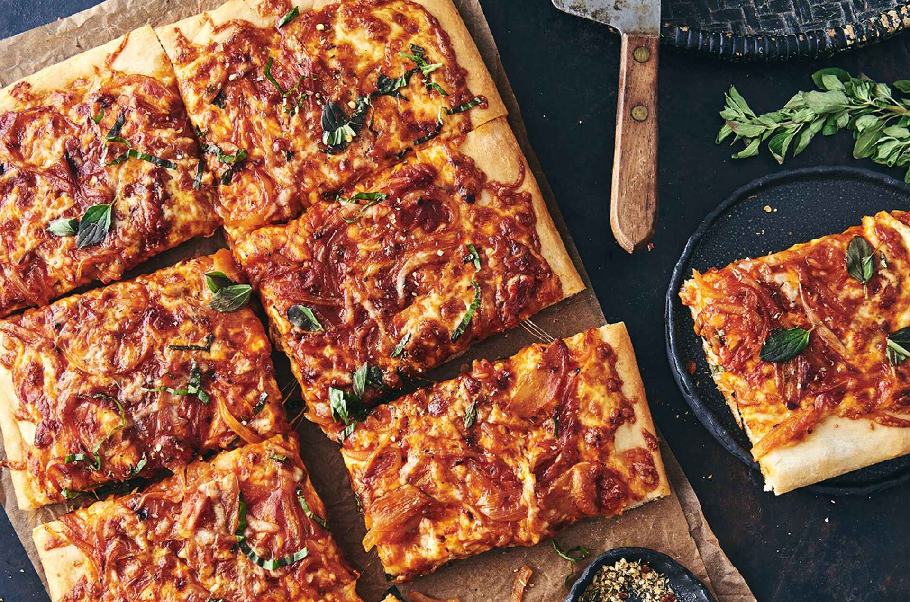

Sicilian Pizza
Date: 23 Dec 2022
Neapolitan pizza, or pizza Napoletana, is a type of pizza that originated in Naples, Italy. This style of pizza is prepared with simple and fresh ingredients: a basic dough, raw tomatoes, fresh mozzarella cheese, fresh basil, and olive oil. No fancy toppings are allowed! One of its defining characteristics is that there is often more sauce than cheese. This leaves the middle of the pie wet or soggy and not conducive to being served by the slice. Because of this, Neapolitan pizzas are generally pretty small (about 10 to 12 inches), making them closer to the size of a personal pizza. Neapolitan pizzas are also cooked at very high temperatures (800 F to 900 F) for no more than 90 seconds.
Pizza as we know it today (dough topped with tomatoes and cheese) was invented in Naples. Before the 1700s, flatbreads existed but were never topped with tomatoes, which is now a defining characteristic of pizza. Tomatoes were brought to Europe in the 16th century by explorers returning from Peru. However, many Europeans believed tomatoes were poisonous until poor peasants in Naples began to top their flatbread with them in the late 18th century. The dish soon became popular. Many visitors to Naples would even seek out the poorer neighborhoods to try this local specialty. Marinara pizza does not have cheese. It received its name because it was traditionally prepared by “la marinara” (a seaman's wife) for her husband when he returned from fishing trips in the Bay of Naples. Baker Raffaele Esposito, who worked at the Naples pizzeria “Pietro... e basta così,” is generally credited with creating Margherita pizza. In 1889, King Umberto I and Queen Margherita of Savoy visited Naples. Esposito baked them a pizza named in honor of the queen whose colors mirrored those of the Italian flag: red (tomatoes), white (mozzarella), and green (basil leaves). This is what is now known as the classic Neapolitan pizza today.